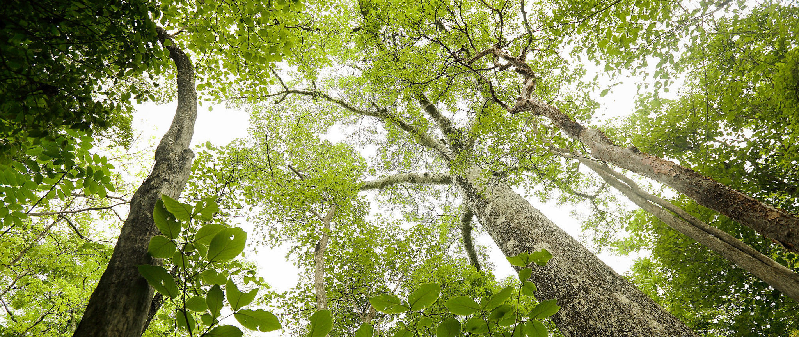

UNE ÎLE DE PASSION
La faune et la flore de Madagascar sont d’une richesse incomparable. Elle est considérée par tous les scientifiques comme un sanctuaire de la nature et le berceau d’espèces endémiques de l’île. En effet, vous y trouverez des espèces uniques au monde avec près de 7 variétés de baobabs, 19 000 espèces végétales et une faune de plus de 100 000 espèces. Cette originalité exceptionnelle est notamment dûe à sa situation isolée au milieu de l’océan Indien. C’est donc un voyage haut en couleurs qui vous attend !
LE LÉMURIEN, ESPÈCE EMBLÉMATIQUE DE MADAGASCAR
Les lémuriens sont une espèce de singe endémique de Madagascar. Les cinq familles de ce singe atypique sont uniquement observables aux quatre coins de "la grande île". On le trouvera dans les parcs nationaux, les réserves naturelles ou dans son plus simple habitat, la forêt tropicale. Symbole de la faune malgache, il embellira vos sorties au détour d’une randonnée en forêt, lors de vos sorties dans le grand sud ou au cours d’un circuit birdwatching.
LES TSINGY DE MADAGASCAR, CURIOSITÉ GÉOLOGIQUE
Nés de l'érosion, les tsingy de Madagascar sont des formations de coquillages fossilisés. Vous pourrez admirer dans un décor spectaculaire d'une immensité qui nous renvoie vers une époque oubliée : le Jurassique.
OBSERVATION DES BALEINES À MADAGASCAR
Chaque année de juin à septembre, les baleines à bosse migrent au large des côtes nord-est de Madagascar pour s’accoupler et mettre bas. Vous pourrez ainsi embarquer en petits groupes, pour observer ces impressionnants mammifères marins qui arrivent par centaines.
LE BAOBAB, L’EMBLÉMATIQUE ARBRE MALGACHE
Véritable emblème de la flore malgache, le baobab est un arbre majestueux et sacré qui compte huit espèces. Six d’entre elles ne poussent qu’à Madagascar. L’allée des baobabs en regroupe le plus de spécimen au monde, vous pourrez ainsi vous rendre compte de leur taille impressionnante et admirer certains troncs s’entrelacer naturellement (baobab amoureux).
Le baobab, ou « arbre bouteille »
« Sanctuaire de la nature » et « joyau écologique », sont les adjectifs qui qualifient la richesse naturelle de Madagascar. Le baobab, aussi appelé « reniala » (« mère de la forêt ») en malgache, est un arbre séculaire 100% malgache.
On compte huit espèces sur la planète et six d’entre elles sont endémiques de l’île. Le baobab constitue à lui seul une importante réserve d’eau qui lui permet de supporter des conditions climatiques extrêmes.
Ce tronc rempli d’eau lui a même valu le nom « d’arbre bouteille ». Le lieu idéal pour admirer les baobabs se trouve à Morondava : l’allée des baobabs. Mais on peut aussi en voir à Majunga et à Tuléar, ainsi que dans les parcs Anakarafantsika, Vohibisa, et Kirindy Mitea.
LE SAVIEZ-VOUS ?
Le tronc des baobabs mesure pour certaines espèces jusqu’à 9 mètres de diamètre et 30 mètres de haut. On raconte que la forme si particulière du baobab serait due au fait qu’il aurait été planté à l’envers, les racines vers le ciel.
L'allée des baobabs
À 19 km de Morondava, admirez l’unique forêt au monde de baobabs.
Cet ensemble d’une douzaine d’arbres impose un paysage d’une élégance rare.
La plupart de ces baobabs sont vieux de plus de 800 ans, héritage des forêts denses qui ont prospéré sur l’île il y a bien longtemps.
C’est ici que vous admirerez les plus beaux spécimens dans un cadre exceptionnel.
OÙ VOIR LES BAOBABS ?
Le lieu idéal pour admirer les baobabs est à Morondava : l’allée des baobabs. Mais vous pourrez également en apercevoir à Majunga et à Tulear.